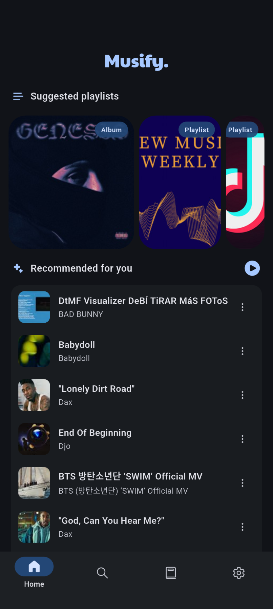

Musify 从零上手：安卓无广告开源音乐播放器完整指南
第一次装 Musify，这篇教程带你一步步走完安装、建歌单、离线下载和数据备份，让你摆脱会员广告的困扰，打造属于自己的离线曲库。
如果你厌倦了每天被弹窗打断、或者会员账单越积越多，是时候试试 Musify 了——它的官网上有完整的特性说明，核心卖点是完全开源、无账号体系、内置 SponsorBlock 的安卓音乐播放器。这篇教程结束时，你会装好应用、建好第一张歌单、下载一批离线歌曲、并且把数据安全备份一份。
准备工作
先确认两件事：安卓 8.0 及以上的手机就能跑，安装包从musify下载拿最新版就行。首次打开会看到一个干净的四栏布局——首页推荐、搜索、音乐库、设置。整个界面 Material You 设计，安卓 12+ 开了动态取色之后配色会跟你桌面壁纸同步。

别急着马上搜歌，先把几个基础设置调对，省得后面踩坑。
第一步：基础设置一分钟搞定
打开设置面板，从上往下过一遍：
- 主题选档：找到"外观"分组，推荐选"跟随系统"，晚上自动切深色省 OLED 屏的电。有动态取色开关的话也打开，换壁纸界面颜色就跟着变。
- 音频质量：默认是自动，不想流量烧太快的话手动拉到"平衡"档；WiFi 环境下直接选"最高"。
- 下载路径：这个一定要改默认位置——别选应用私有目录，卸载会清空！选一个你自己能找到的文件夹，比如
Downloads/Musify/或者 SD 卡里的位置。 - SponsorBlock：默认已开启，它会自动跳过音频里的赞助插播、自报家门、末尾提醒这些非音乐内容。有强迫症的可以去高级设置里逐项关掉。
第二步：搜索、收藏、建歌单
Musify 没有账号，收藏和歌单全存在本机——这是好事，不跟踪、不上传，但也意味着你得自己备份，后面会讲。
搜歌很直观：点底部第二个 tab，输入歌手或歌名，结果里分"单曲""专辑""艺术家"三个标签。搜到喜欢的单曲，长按会弹出菜单，里面有几个常用操作：
- 加到喜欢：心形图标，加了之后在音乐库的"喜欢"里能找到
- 加到歌单：新建歌单或选已有歌单，支持创建时直接选封面
- 下载：直接开始下，默认格式是 m4a，体积小音质够用
建歌单的节奏是：先随便搜几首喜欢的歌，分别长按加到同一个新歌单里，等歌单攒够 15~20 首，再整体标记为喜欢或者下载整张。这样下载队列能一次性跑完，不会被多次触发打断。
第三步：离线下载与离线模式
下载完成后，音乐库的"已离线歌曲"里就有了。Musify 的缓存和离线下载是两回事——缓存是系统自动清理的临时文件，离线下载是你主动存的、卸载前一直稳定存在。想确保一首歌不丢，必须走到"已离线歌曲"里。
离线模式是 Musify 独有的实用开关。正常情况下没网时播放器会自动暂停，但信号差到只有 2G、或者流量超了的时候，应用会在后台反复尝试联网拖慢播放甚至卡顿。这时候打开设置里的"离线模式"，应用强制只从本地曲库读取，搜索结果也只显示已下载的曲目，在线入口全部临时禁用。飞机上、地铁隧道里、漫游时特别好用。
第四步：换机/重装前的数据导出
Musify 没有云同步，所有歌单、收藏、偏好设置全存在手机本地。换手机、卸载重装、或者多台设备切换时，导出数据是唯一保住这些东西的办法。
打开设置 → "数据"或"备份"分组 → 点"导出数据"，应用会把歌单元数据、收藏列表、收听历史、偏好设置打成一个文件。保存时千万别只存在应用私有目录——卸载时一起清空。存到 Downloads 或者自己选个网盘传一份做双备份。
然后在新手机上装好 Musify，同样进设置 → 点"导入数据"，选刚才那个文件。导入过程几秒就完，歌单和收藏全部回来。
注意：导出文件不包含已下载的离线歌曲——那玩意儿体积可能好几 GB，导出要保持轻量。所以完整换机分两步：先导出数据保住歌单结构 → 新机导入恢复歌单 → 逐首或整张歌单重新下载。更详细的迁移步骤和边界情况可以去musify文档翻翻。

常见卡点
卡点一：导出/导入失败
最常见的原因是传输方式不靠谱。用某些聊天应用传文件时会自动压缩或改扩展名，导致导入校验不通过。解决方法：用数据线、网盘直下、或者蓝牙传，确保文件一字不改。还有跨大版本导出导入理论上不兼容，用导出时的同一大版本最稳。
卡点二：动态取色开关找不到
两个条件必须同时满足：安卓 12 或更高系统版本，以及 Musify 2023 年后更新的版本都支持。两个条件都满足但开关还是没出现，大概率是国产 ROM 屏蔽了 Material You 的取色接口——换一个支持的 ROM 或者手动选 accent color 就行。
卡点三：离线歌曲被清了
先去确认你是不是选对了存储路径。如果下载路径设成了应用私有目录，卸载重装就会清空。改成公开文件夹，系统就不会动它。另外清理应用数据时也要小心，别把离线曲目一起勾上。
往下还能玩什么
均衡器调一调（内置多个预设模式）、歌词样式自定义、跨平台歌单导入（支持 Spotify 链接生成）、收听回顾年度报告——Musify 的功能比表面看起来多得多，摸透了基本上就是你的私人音乐助理。这套项目同时维护在三个仓库里，GitHub上是原版，国内访问选 Gitee 或 GitCode 更快。